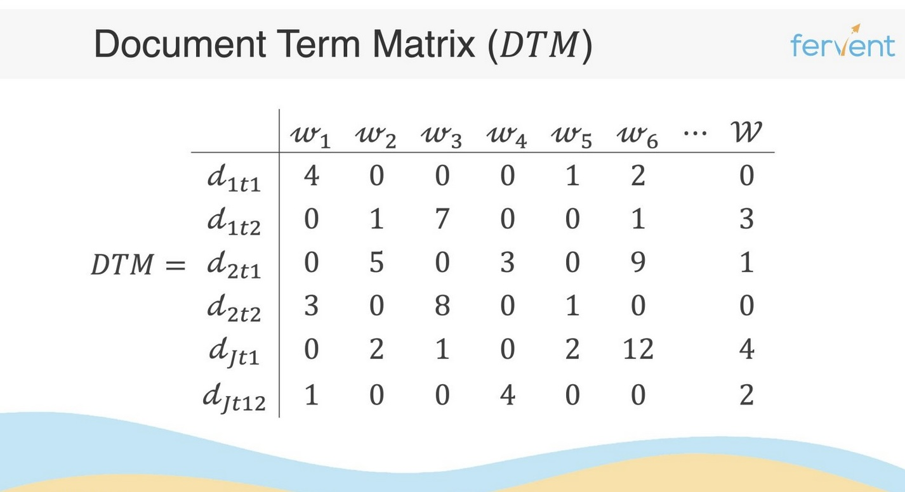
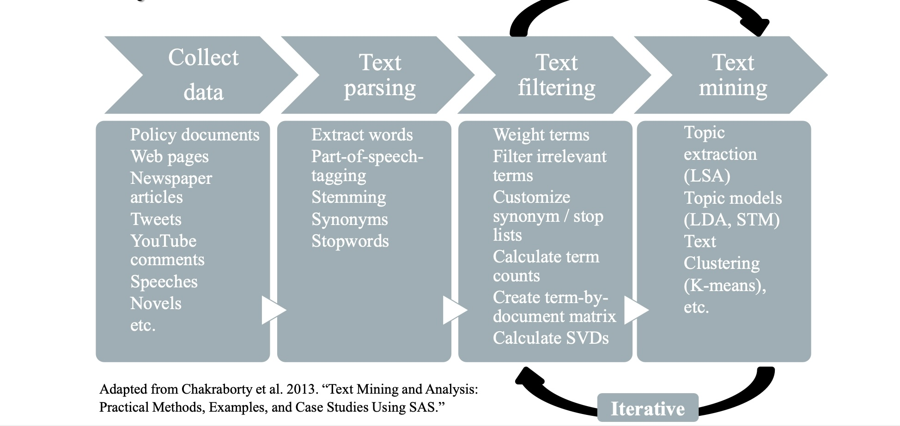

# Install and import packages
# install.package("pacman")
library(pacman)
pacman::p_load("rvest", "tidyverse")
# Define the URL of the page we want to scrape
url <- read_html("https://en.wikipedia.org/wiki/List_of_Nobel_laureates")
# Extract the table from the page
nobel_table <- url %>%
html_node("table") %>% # selects the first table on the page
html_table() # converts the HTML table to a data frameDay 1 Notes
Scraping & Text Preprocessing
What is Natural Language Processing (NLP)?
Natural Language Processing (NLP) is an interdisciplinary field between computer science and linguistics, which ultimately aims to quantitatively represent text in such a form that computers can understand it. The methods developed within NLP are used in a variety of different fields and applications, such as sociology, political science, and various private companies. Due to the growing availability of digital trace data, NLP has become a transformative subfield that affects most people’s daily lives through the latest advances in machine learning.
Let’s talk a bit about Wikipedia
Wikipedia is a free online encyclopedia, created and edited by volunteers around the world and hosted by the Wikimedia Foundation since 2001. It is one of the largest and most popular general reference works on the internet, with millions of articles in multiple languages. Wikipedia is written collaboratively by largely anonymous volunteers who write without pay. Anyone with internet access can write and make changes to Wikipedia articles, except in limited cases where editing is restricted to prevent disruption or vandalism.
Wikipedia is a reflection of our contemporary knowledge production — it crucially shapes what people know and how they remember the past. Wikipedia is influencing media content, scientific research, foundational for generative AI, and ordinary citizens’ real-life decisions. Journalistic work has additionally shown that political groups proactively seek to edit Wikipedia in their favor, such as politicians or far-right actors (. Previous research has shown that number editors on Wikipedia are limited and predominantly male, reflecting persisting patterns of gender inequality in other aspects of society.
Web Scraping
The current advances in machine learning, combined with the growing amount of digital data, have led to a new interest in NLP. Web scraping is the process where we “scrape” data from the web, which is then used to train a model. Compared to traditional data collection methods, web scraping allows us to gather far more data in a much shorter time.
We can either scrape data from a website (static) or from an Application Programming Interface (dynamic). The latter is often more efficient, as it allows us to access data directly from the source without having to parse HTML. rvest is a package that helps you scrape data from web pages statically. We’re scraping the award table on this Wikipedia page.
API
Scraping data through the Wikipedia web API is relatively easy. An API is a piece of software that allows two pieces of software to talk to each other, in most cases through an HTTP request — similar to the request your browser sends when it asks a server for a page’s HTML.
The process is roughly always the same:
- You connect to the URL of your API, e.g.
en.wikipedia.org/w/api.php - You send an HTTP GET request to the API with specific parameters — this tells the API what you want.
- You retrieve a response, usually in JSON.
library(httr2)
get_last_revision <- function(page_title, continue_parameter = NULL,
user_agent = "Polmem_ucl") {
baseurl <- "https://en.wikipedia.org/w/api.php"
params <- list(
action = "query",
format = "json",
titles = as.character(page_title),
prop = "revisions",
rvprop = "ids|timestamp|user|userid|comment|size|content",
rvslots = "main",
rvlimit = 1, # just the latest
rvdir = "older" # newest first; single item is current revision
)
if (!is.null(continue_parameter)) params$rvcontinue <- continue_parameter
resp <- request(baseurl) %>%
req_user_agent(user_agent) %>%
req_url_query(!!!params) %>%
req_perform()
json <- resp_body_json(resp)
pages <- json$query$pages
if (is.null(pages) || !length(pages)) return(data.frame())
pg <- pages[[1]]
if (is.null(pg$revisions) || !length(pg$revisions)) return(data.frame())
rv <- pg$revisions[[1]]
slots <- rv$slots$main
data.frame(
page_title = pg$title %||% NA_character_,
page_id = as.character(pg$pageid %||% NA),
revid = as.character(rv$revid %||% NA),
parentid = as.character(rv$parentid %||% NA),
user = as.character(rv$user %||% NA_character_),
userid = as.character(rv$userid %||% NA),
timestamp = as.character(rv$timestamp %||% NA_character_),
size = as.character(rv$size %||% NA),
comment = as.character(rv$comment %||% NA_character_),
contentmodel = slots$contentmodel %||% NA_character_,
contentformat = slots$contentformat %||% NA_character_,
content = slots[["*"]] %||% NA_character_,
check.names = FALSE,
stringsAsFactors = FALSE
)
}
# Applying the function
page_content_revision <- get_last_revision("List of Nobel laureates")Using Wrappers
For most relatively accessible APIs, someone has built a wrapper. There exist two main wrappers for Wikipedia in R: WikipediR and wikkitidy. We use the WikipediR package, which lets us send requests to the Wikipedia API in just a few lines of code. We only need to specify the language, the project, and the page name. Unfortunately, WikipediR does not parse the HTML for us, so we use the XML package to parse it and extract the table.
library(WikipediR)
library(XML)
# WikipediR wrapper
page_content_nobel <- WikipediR::page_content(
language = "en", project = "wikipedia",
page_name = "List of Nobel laureates", clean_response = TRUE
)
# Parsing the html
parsed_html <- htmlParse(page_content_nobel, asText = TRUE)
first_table <- readHTMLTable(parsed_html, which = 1, stringsAsFactors = FALSE)
colnames(first_table) <- first_table[1, ]
first_table <- first_table[-1, ]Task
- Scrape the biographies of the female and male Nobel laureates from Wikipedia. You can do this dynamically or statically — if dynamically, use the
WikipediRorwikkitidypackage. - Wikipedia helps us here via its category structure: scrape all pages and their content under Category: Lists of Nobel laureates.
One approach: use pages_in_category() from WikipediR to retrieve all pages within the “Women Nobel laureates” category. There isn’t a similar category for men, so pivot the nobel_table scraped earlier, filter out the names, and merge.
# Retrieving all pages in the category (but not content yet)
all_pages_category_women <- WikipediR::pages_in_category(
"en", "wikipedia", categories = "Women Nobel laureates",
clean_response = TRUE
)
all_pages_category_women <- all_pages_category_women[-c(1, 2), ]
nobel_table <- nobel_table %>%
slice(-n()) %>%
pivot_longer(-Year, names_to = "category", values_to = "laureates") %>%
rename(title = laureates)
women <- left_join(all_pages_category_women, nobel_table, by = "title") %>%
select(title, category, Year) %>%
mutate(gender = "female")
men <- nobel_table %>%
filter(!title %in% women$title) %>%
mutate(gender = "male")
all_winners <- bind_rows(women, men)Show solution
# preprocess the scraped data to get a clean list of names
names_tbl <- all_winners %>%
filter(!is.na(title), nzchar(title), tolower(str_trim(title)) != "none") %>% # delete all empty cells
# drop “no award” rows that are just dashes (any kind)
filter(!str_detect(title, "^[[:space:]]*[—–-]+[[:space:]]*$")) %>%
# some cells have multiple winners separated by semicolons
separate_rows(title, sep = "\\s*;\\s*") %>%
# strip bracketed citation markers like [a], [13]
mutate(title = str_remove_all(title, "\\[(?:\\d+|[A-Za-z])\\]")) %>%
mutate(title = str_squish(title)) %>%
filter(!title %in% c("None", "List of women Nobel laureates", "Cancelled due to World War II")) %>%
filter(nzchar(title))
# unique vector of names
all_names <- names_tbl %>%
distinct(title) %>%
arrange(title) %>%
pull(title)
summaries_pages <- data.frame()
for (title in all_names) {
summary_page <- tryCatch(wikkitidy::get_page_summary(language = "en", title = title),
error = function(e) NULL)
if (!is.null(summary_page)) {
summaries_pages <- bind_rows(summaries_pages, summary_page)
}
}Data Preparation
A pre-scraped data set is provided, containing all summaries of the biographies of all award winners, with columns:
pageid— unique identifier for each Wikipedia pagetitle— the Wikipedia page title (the laureate’s name)extract— the summary of the biographyrevision— unique identifier for the specific page revisiongender— whether the awarded individual was female or male
⬇ Download wikipedia_nobel_biographies_summaries_clean.qs (134 KB)
library(qs)
clean_text_data <- qread("../data/wikipedia_nobel_biographies_summaries_clean.qs")
glimpse(clean_text_data)
clean_text_data <- clean_text_data %>%
drop_na(title)
# Gender distribution
proptable <- prop.table(table(clean_text_data$gender))
round(proptable, digits = 2)Looking at the gender distribution reveals how imbalanced Nobel prizes are with respect to gender — only about 4.6% of all prizes were awarded to women. Let’s find out how these women are depicted on Wikipedia.
Optional Task
⬇ Download wikipedia_nobel_biographies_summaries_extended_clean.qs (136 KB)
- Read the
wikipedia_nobel_biographies_summaries_extended_clean.qsdata set and store it in a new object. - Drop NA values in the
titlevariable. - Select a subset of columns, but keep the gender column.
- Filter out only female instances.
Show solution
wiki_summaries_ex <- qread("../data/wikipedia_nobel_biographies_summaries_extended_clean.qs")
wiki_summaries_ex <- wiki_summaries_ex %>%
drop_na(title) %>%
select(pageid, title, extract, revision, gender) %>%
filter(gender == "female")Text Preprocessing
Text preprocessing transforms raw text data into a clean, structured format suitable for analysis. Scraping your own data is often painful — the goal of preprocessing is to enhance the quality of the text by removing noise, inconsistencies, and irrelevant information.
We first create a corpus — our set of documents with their corresponding text (e.g. different Wikipedia articles). A corpus consists of documents, which consist of sentences, which consist of terms.
Common preprocessing techniques:
- Tokenization — breaking text into smaller units (words, phrases, or sentences).
- Lowercasing — ensures uniformity and reduces complexity.
- Removing punctuation and special characters — these usually don’t contribute to meaning.
- Removing stop words — common words (“and”, “the”, “is”) that don’t carry much meaning.
- Stemming and lemmatization — reduce words to their base/root form.
We use the quanteda package for text preprocessing.
library(quanteda)
# Create corpus
corpus <- corpus(clean_text_data, text_field = "extract", docnames = "pageid")
# Tokenization
tokens <- corpus %>%
tokens(remove_punct = TRUE,
remove_symbols = TRUE) %>%
tokens_remove(stopwords("en"), padding = FALSE) %>%
tokens_tolower() %>%
tokens_compound(pattern = clean_text_data$title, concatenator = "_", case_insensitive = FALSE) %>%
tokens_compound(pattern = "nobel prize", concatenator = "_", case_insensitive = FALSE) %>%
tokens_wordstem()The Document-Feature Matrix (DFM)
A Document-Feature Matrix (DFM), or Document-Term-Matrix (DTM), is a structured representation of text data that captures the frequency or presence of words (features) across a collection of documents. Rows represent documents, columns represent unique terms, and each cell holds the frequency of a term in a document. With many words and few documents the matrix gets very sparse — watch out for the Curse of Dimensionality!
A DFM is a crucial step in NLP: it transforms unstructured text into a structured format that statistical and machine learning techniques can work with. It holds a few key assumptions (“bag of words”):
- The words in a document convey meaning.
- Word order does not matter.
- Word combinations do not matter (i.e. negation).
- Grammar does not matter.
- Words are the only relevant features (not punctuation, not syllables, etc).

Most words do not appear in every document, so the matrix easily gets sparse. We can trim the DFM to remove very rare and very frequent words. Counting raw term prevalence implicitly assumes all words are equally important, which is often not the case — so we apply tf-idf weighting. It reflects how important a word is to a document in a collection: importance increases with how often a word appears in the document, offset by how common the word is across the whole corpus.
\[TF = \frac{\text{count of term } t \text{ in document}}{\text{total terms in document}}\]
\[TF\text{-}IDF = TF \times \ln\!\left(\frac{\text{total documents}}{\text{documents containing } t}\right)\]
Worked example
- d1: “red car fast”
- d2: “blue car slow car”
DFM (counts):
blue car fast red slow
d1 0 1 1 1 0
d2 1 2 0 0 1Term Frequency (TF = count / doc length):
- d1: blue=0, car=0.333, fast=0.333, red=0.333, slow=0
- d2: blue=0.25, car=0.5, fast=0, red=0, slow=0.25
Document Frequency (DF, N = 2 docs): blue=1, car=2, fast=1, red=1, slow=1
Inverse Document Frequency (IDF = ln(N/df)): blue=0.693, car=0, fast=0.693, red=0.693, slow=0.693
TF-IDF (tf × idf):
blue car fast red slow
d1 0.000 0.000 0.231 0.231 0.000
d2 0.173 0.000 0.000 0.000 0.173Optional Task: calculate a small DFM by hand
- d1: “The quick brown fox”
- d2: “The lazy dog”
DFM (counts):
the quick brown fox lazy dog
d1 1 1 1 1 0 0
d2 1 0 0 0 1 1TF (d1 has 4 tokens, d2 has 3 tokens):
the quick brown fox lazy dog
d1 0.25 0.25 0.25 0.25 0.00 0.00
d2 0.33 0.00 0.00 0.00 0.33 0.33DF: the=2, quick=1, brown=1, fox=1, lazy=1, dog=1. IDF = ln(2/df): the=0.000, quick=0.693, brown=0.693, fox=0.693, lazy=0.693, dog=0.693.
TF-IDF:
the quick brown fox lazy dog
d1 0.000 0.173 0.173 0.173 0.000 0.000
d2 0.000 0.000 0.000 0.000 0.231 0.231Calculating the DFM with quanteda
We take our tokens object and call dfm() on it. We usually want to trim the DFM (removing very rare and very frequent words), then apply tf-idf weighting to reduce sparsity. min_termfreq = 0.8 with termfreq_type = "quantile" keeps only the top 20% most frequent terms across the corpus (the bottom 80% of rare words get cut).
# Create a document-feature matrix (DFM)
dfm <- dfm(tokens) %>%
dfm_trim(min_termfreq = 0.8, termfreq_type = "quantile")
# tf-idf weighting
dfm_tfidf_mat <- dfm_tfidf(dfm)Task
- Build a corpus for female and male award winners separately.
- Preprocess the text (tokenization, lowercasing, removing punctuation and special characters, removing stop words, stemming/lemmatization).
- Look at what preprocessing options quanteda offers.
- Create a DFM for both corpora.
Show solution
clean_text_female <- clean_text_data %>% filter(gender == "female")
clean_text_male <- clean_text_data %>% filter(gender == "male")
corpus_female <- corpus(clean_text_female, text_field = "extract", docnames = "pageid")
corpus_male <- corpus(clean_text_male, text_field = "extract", docnames = "pageid")
tokens_female <- corpus_female %>%
tokens(remove_punct = TRUE, remove_symbols = TRUE) %>%
tokens_remove(stopwords("en"), padding = FALSE) %>%
tokens_tolower() %>%
tokens_wordstem()
tokens_male <- corpus_male %>%
tokens(remove_punct = TRUE, remove_symbols = TRUE) %>%
tokens_remove(stopwords("en"), padding = FALSE) %>%
tokens_tolower() %>%
tokens_wordstem()
dfm_female <- dfm(tokens_female)
dfm_male <- dfm(tokens_male)Descriptive Analysis
library(quanteda.textplots)
library(quanteda.textstats)
set.seed(132)
textplot_wordcloud(dfm_female, max_words = 100)set.seed(132)
textplot_wordcloud(dfm_male, max_words = 100)library(ggplot2)
dfm_female %>%
textstat_frequency(n = 15) %>%
ggplot(aes(x = reorder(feature, frequency), y = frequency)) +
geom_point() +
coord_flip() +
labs(x = NULL, y = "Frequency") +
theme_minimal()
dfm_male %>%
textstat_frequency(n = 15) %>%
ggplot(aes(x = reorder(feature, frequency), y = frequency)) +
geom_point() +
coord_flip() +
labs(x = NULL, y = "Frequency") +
theme_minimal()Text Analysis Workflow for Bag-of-Words Models
The general workflow typically involves:
- Data collection — gather text data from websites, social media, or documents.
- Text parsing — break text into tokens, stem words, remove stop words.
- Text filtering — weight your terms.
- Text modeling — apply statistical or machine learning models (topic modeling, sentiment analysis, classification).

There are no general rules for preprocessing decisions — it always depends on your data and research question. Try out different preprocessing steps and see how they affect your results.